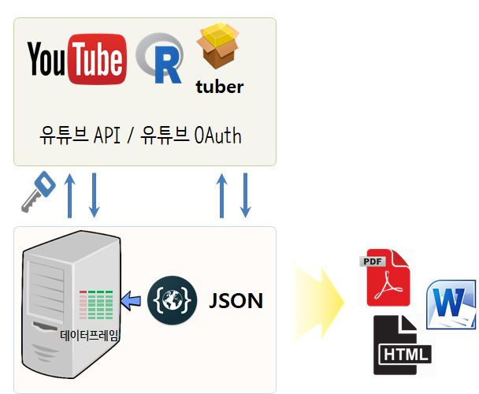
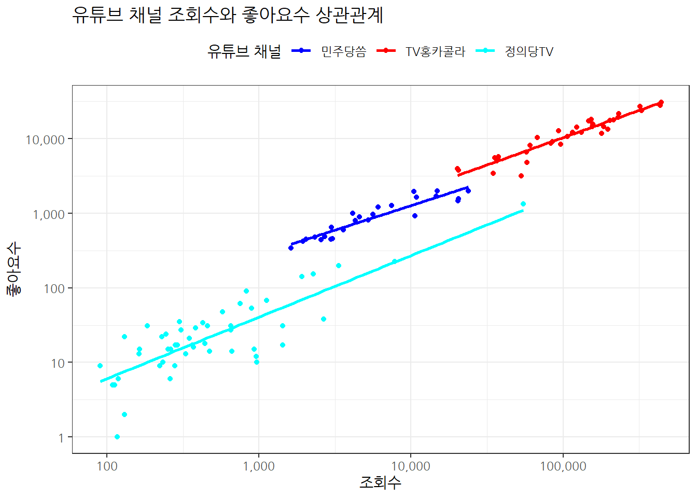

재보선 2019 선거
유튜브
댓글 텍스트 데이터 처리 흐름
유튜브 API에서 직접 유튜브 데이터를 가져오는 대신에 tuber 팩키지를 통해서 쉽게 R로 데이터를 바로 가져올 수 있다. 이를 위해서 yt_oauth("app_id", "app_password") 함수에 넣을 “app_id”, “app_password”를 설정하는 과정은 데이터 과학자가 바라본 제7회 지방선거, 구글 - 유튜브, 트렌드을 참조한다.

유튜브 채널 정보
유튜브 채널이 대표적인 국민과 소통하는 방송매체로 자리잡아가고 있다. 1 주요 정당별 유튜브 채널은 다음과 같다.
유튜브 채널 데이터 가져오기
get_yt_stat() 사용자 정의함수를 다음과 같이 작성할 수도 있으나, get_all_channel_video_stats() 함수가 tuber 팩키지에서 지원되고 있다.
yt_oauth()함수로 인증을 거친다.yt_channel채널 리스트로 웹사이트에서 찾아 정리한다.- 함수형 프로그래밍을 활용하여
for루프 대신 간결하게 데이터를 가져온다.- 채널통계:
get_channel_stats() - 동영상통계:
get_all_channel_video_stats()혹은 사용자 정의 함수get_yt_stat()
- 채널통계:
library(tuber)
library(tidyverse)
yt_oauth(yt_app_id, yt_app_pw)
yt_channel <- list("TV홍카콜라" = "UCfmicRK2-WdZMVQDrfcitLA",
"민주당씀" = "UCoQD2xsqwzJA93PTIYERokg",
"정의당TV" = "UC4KdOy46f0HCJBqTiq7MLPg")
# 1. 데이터 가져오기 -----
## 1.1 유튜브 채널 통계 -----
yt_channel_tbl <- tibble(channel= names(yt_channel), stat =NA)
yt_channel_tbl <- yt_channel_tbl %>%
mutate(stat = map(yt_channel, ~get_channel_stats(.x))) %>%
mutate(`구독자` = map_chr(stat, ~.x$statistics$subscriberCount) %>% as.integer,
`조회수` = map_chr(stat, ~.x$statistics$viewCount) %>% as.integer,
`동영상수` = map_chr(stat, ~.x$statistics$videoCount) %>% as.integer) %>%
select(-stat)
yt_channel_tbl %>% write_rds("data/yt_channel_tbl.rds")
## 1.2 사용자 정의 유튜브 동영상 통계 추출함수 -----
get_yt_stat <- function(yt_id) {
# 1. 채널 리스트
yt_list <- list_channel_resources(filter = c(channel_id = yt_id))
# 2. 채널의 재생목록
yt_playlist_id <- yt_list$items[[1]]$contentDetails$relatedPlaylists$uploads
# 3. 비디오 ID
yt_vids <- get_playlist_items(filter= c(playlist_id=yt_playlist_id))
yt_vid_ids <- as.vector(yt_vids$contentDetails.videoId)
# 동영상 활동성 통계 가져오기
yt_stat_df <- map_df(yt_vid_ids, get_stats)
return(yt_stat_df)
}
## 1.3 유튜브 동영상 통계 추출함수 -----
# yt_video_stat_tbl <- map_df(yt_channel, get_all_channel_video_stats)
# 2. 데이터 가져오기 -----
## 2.1. 유튜브 채널 데이터 가져오기 -----
yt_channel_stat_tbl <- tibble(channel= names(yt_channel), stat =NA)
yt_channel_stat_tbl <- yt_channel_stat_tbl %>%
mutate(stat = map(yt_channel, ~ get_yt_stat(.x)))
yt_channel_stat_tbl %>%
write_rds("data/yt_channel_stat_tbl.rds")
## 2.2. 유튜브 동영상 데이터 가져오기 -----
yt_video_stat_tbl <- map_df(yt_channel, get_all_channel_video_stats)
yt_video_stat_tbl %>% write_rds("data/yt_video_stat_tbl.rds")각정당별 대표 채널 활동성
유튜브 각 채널별로 조회수, 구독자수 등을 데이터프레임으로 제작하여 기초 통계작업을 수행한다.
\[평균 조회수 = \frac{조회수}{동영상수}\]
yt_channel_tbl <- read_rds("data/yt_channel_tbl.rds")
yt_channel_tbl %>%
mutate(`평균조회수` = `조회수` / `동영상수`) %>%
arrange(desc(`평균조회수`)) %>%
DT::datatable() %>%
DT::formatRound(c(2:5), digits=0)preserve29e5ad6189e6efee
유튜브 채널 활동성 분석
대표적인 유튜브 채널 활동성 분석을 위해서 각 동영상별 좋아요수와 조회수를 바탕으로 활동성을 살펴본다.
조회수 vs 좋아요수 시각화
정량적으로 조회수와 좋아요수를 비교하기 전에 시각화를 통해 각 정당별로 살펴본다.
library(extrafont)
loadfonts()
yt_channel_stat_tbl <- read_rds("data/yt_channel_stat_tbl.rds")
yt_channel_stat_tbl %>%
unnest(stat) %>%
mutate_at(vars(contains("Count")), as.numeric) %>%
mutate(`channel` = factor(`channel`, levels=c("민주당씀", "TV홍카콜라", "바른미래당", "정의당TV"))) %>%
ggplot(aes(x=viewCount, y=likeCount, color=channel)) +
geom_point() +
scale_y_log10(labels=scales::comma) +
scale_x_log10(labels=scales::comma) +
geom_smooth(method = "lm", se=FALSE) +
labs(x="조회수", y="좋아요수", color="유튜브 채널",
title="유튜브 채널 조회수와 좋아요수 상관관계") +
theme_bw(base_family="NanumGothic") +
theme(legend.position = "top") +
scale_color_manual(values = c("blue", "red", "cyan", "yellow")) 
reg_df <- yt_channel_stat_tbl %>%
mutate(stat = map(stat, ~mutate_at(.x, vars(contains("Count")), as.numeric))) %>%
mutate(model = map(stat, ~lm(likeCount ~ viewCount, data=.x))) %>%
mutate(tidy_model = map(model, broom::tidy)) %>%
unnest(tidy_model) %>%
filter(term == "viewCount") %>%
arrange(desc(estimate))조회수 vs 좋아요수 효과
조회수를 좋아요로 변환되는 능력치를 회귀분석 회귀계수로 추정을 한다면 TV홍카콜라 채널이 0.0647414으로 정의당의 0.02447과 비교하여 더 많은 호감도를 보이는 것으로 나타난다.
reg_df %>%
select(channel, estimate, p.value)# A tibble: 3 x 3
channel estimate p.value
<chr> <dbl> <dbl>
1 민주당씀 0.0723 6.25e- 8
2 TV홍카콜라 0.0647 4.15e-19
3 정의당TV 0.0245 5.97e-42유튜브 채널별 동영상 상세
앞서 유튜브에서 추출한 채널별 데이터를 원본 동영상 수준으로 내려서 상세히 살펴볼 수 있도록 DT 팩키지 인터랙티브 표를 사용한다.
yt_video_stat_tbl <- read_rds("data/yt_video_stat_tbl.rds")
yt_video_stat_tbl %>%
mutate(publication_date = as.Date(publication_date)) %>%
mutate(id = paste0("<a href=https://www.youtube.com/watch?v=", id,">", id,"</a>")) %>%
# arrange(desc(-viewCount)) %>%
DT::datatable(escape=FALSE, options = list(scrollX=TRUE, autoWidth = TRUE,
columnDefs = list(list(width = '300px', targets = c(2))))) %>%
DT::formatCurrency(c("viewCount", "likeCount", "dislikeCount", "commentCount"), currency = "", digits = 0) preservebfd5ab619bf3d0fd
유튜브 동영상 댓글
유튜브 동영상 댓글 가져오기
시간이 많이 걸려 대표적인 두 채널 “TV홍카콜라”, “정의당TV” 유튜브 채널만 데이터를 가져온다. get_all_comments() 함수를 통해 댓글을 가져오는데, 동영상 id가 키값으로 되어 있어있고, 댓글이 없는 경우 오류가 나기 때문에 이를 방지하기 위해서 possibly() 부사를 사용한다. 그리고 for 루프로 임의 시간 0~2초 사이 간격을 두고 각 동영상 id에 대한 댓글을 불러온다.
# 1. 대상 리스트 동영상 정리 -----
library(tictoc)
yt_two_channel <- list("TV홍카콜라" = "UCfmicRK2-WdZMVQDrfcitLA",
"민주당씀" = "UCoQD2xsqwzJA93PTIYERokg")
yt_two_video_stat_df <- map_df(yt_two_channel, get_all_channel_video_stats)
yt_two_video_stat_df %>%
write_rds("data/yt_two_video_stat_df.rds")
# 2. 함수형 프로그래밍 동영상 댓글 -----
## 중단됨 !!!
get_all_comments_possibly <- possibly(get_all_comments, otherwise = NULL)
tic()
yt_video_comment_list <- map(yt_two_video_stat_df$id, get_all_comments_possibly)
toc()
yt_video_comment_list %>%
write_rds("data/yt_video_comment_list.rds")
# 396.86 sec elapsed
# 3. for 루프 동영상 댓글 -----
tic()
yt_video_comment_list <- list()
for(i in seq_along(yt_two_video_stat_df$id)) {
# for(i in 1:20) {
yt_video_comment_list[[i]] <- get_all_comments_possibly(yt_two_video_stat_df$id[i])
cat(i, " :\n")
Sys.sleep(runif(1, min=0,max=2))
}
toc()
yt_video_comment_list %>%
write_rds("data/yt_video_comment_list.rds")yt_video_comment_list[c(1:10)] %>%
set_names(yt_two_video_stat_df$id[1:10]) %>%
listviewer::jsonedit()preservef4eb5c81b2ceab16